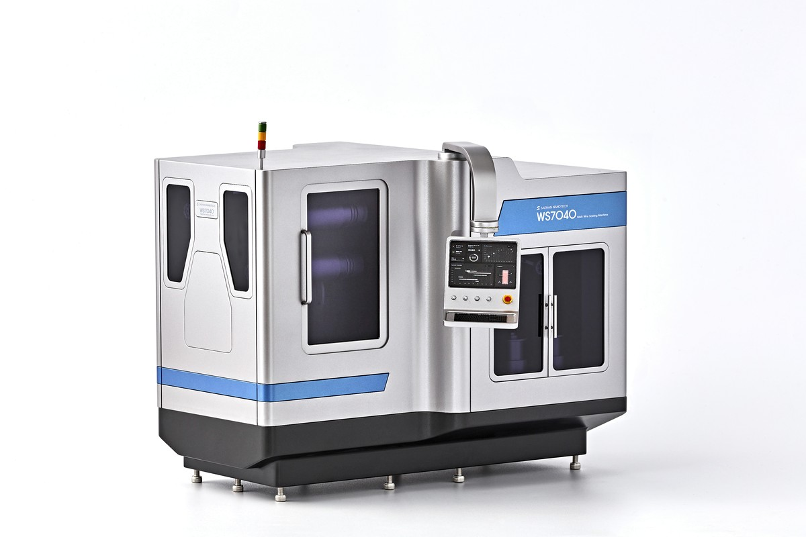
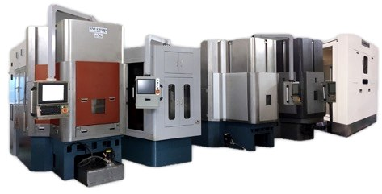

铸铁一体式机架
主轴箱体采用一体铸造结构,最大限度抑制振动,确保高结构刚性。水冷机身在加工过程中进一步抑制热位移。
- 一体铸造主轴箱体设计
- 水冷(水套)机身结构

Multi Wire Sawing Machine（多线切割机）
通过优化切割技术(锭料倾斜与旋转),实现生产效率与品质最大化。本公司可根据客户的材料尺寸与形状需求,定制化设计与制造设备。

ANT-WS 系列——针对不同材料与工件尺寸提供多样化机型配置
兼顾精度与生产效率的设计选择——由新汉纳米科技注册专利提供保障。
主轴箱体采用一体铸造结构,最大限度抑制振动,确保高结构刚性。水冷机身在加工过程中进一步抑制热位移。
主辊双端支撑结构提升回转精度,延长锭料切割长度。高速线材运行使生产效率最大化。
中心轴倾斜装置可高效切割大直径锭料。在难加工材料与金刚石线加工中不可或缺——同时保障生产效率与精度。
中心轴旋转装置使环形材料切割效率最大化。在难加工材料与金刚石线加工中不可或缺——同时提升良品率与精度。
根据材料特性与生产方式,可选择固定式、倾斜式或旋转式配置。
固定锭料方式
传统固定锭料浆料线切割方式——成熟稳定,适用于通用难加工脆性材料。
锭料倾斜方式
锭料中心轴倾斜±3–7°以控制线材接触面积,使大直径材料切割效率最大化。
锭料旋转方式
锭料中心轴360°旋转,专用于环形材料切割,实现均匀的圆周切割。
独家锭料倾斜与旋转机构可实时调整切割角度——较传统方式生产效率最高提升3倍。韩国其他线锯制造商均未提供此项技术。
超细金刚石镀层线材使切缝损耗降至200μm以下。每锭切片数更多 = 每片晶圆成本更低。优异的表面粗糙度减少后续抛光工序。
每一台ANT-WS均根据客户的材料、工件尺寸、厚度规格与产能目标定制设计。线材导向辊几何形状、冷却液系统与张力配置,均按订单要求定制。
钕铁硼(NdFeB)与钐钴(SmCo)磁体须采用金刚石线配合水基冷却液切割。新汉纳米科技在韩国率先开展此项业务——于2024年完成韩国首个电机磁体切割项目。
积累超过二十年的切割数据。各类材料专属工艺配方均经实际生产线验证。
产品开发、设计、制造、安装、培训与售后服务——全部由本厂自主完成。
从半导体到太阳能、显示器与稀土磁体——我们为每一个行业提供定制化设备。
High-Tech Wafers
对硅(Si)和SiC锭料进行高精度线切割,助力高品质晶圆零部件生产。
Photovoltaic Cells
通过对单晶与多晶硅锭料的精密线切割,生产太阳能电池晶圆。
Panels & Cover Materials
对蓝宝石、玻璃及其他显示器基板的精密切割,助力高品质面板生产。
Permanent Magnets
拥有钕铁硼永磁体加工设备出口业绩。精密加工高性能磁体材料,应用于电动汽车驱动电机与风力发电机。
以上为标准规格。可根据客户需求与目标材料进行定制设计与制造。
| 型号 | ANT-WS 20 Series | ANT-WS 40 Series | ANT-WS 50 Series | ANT-WS 60 Series | |
|---|---|---|---|---|---|
| 最大直径 (mm) : (A) | Ø 200 | Ø 400 | Ø 500 | Ø 600 | |
| 工件长度 (mm) | 300 | 300 / 400 / 500 | 300 / 400 / 500 | 300 / 400 / 500 | |
| 工作台切片方向 (U/D) | 向下 | 向上 / 向下 | 向上 / 向下 | 向上 / 向下 | |
| 线材类型 (D/S) | 金刚石 / 浆料 | 金刚石 / 浆料 | 金刚石 / 浆料 | 金刚石 / 浆料 | |
| 锭料旋转方式 (T/R) | 倾斜 / 旋转 | 倾斜 / 旋转 | 倾斜 / 旋转 | 倾斜 / 旋转 | |
| 设备 | 线材运行速度 | 0 ~ 20 m/sec | |||
| 主导轮 (mm) | Ø 200 ~ Ø 250 | ||||
| 主轴数量 | 2 组 | 4 组 | |||
| 排线 / 卷线轴 / 张力 | 2 组 / 2 组 / 2 组 | ||||
| 进给工作台 | Z 工作台行程 | 倾斜式: (A) + 50 mm / 旋转式: 另行评估 | |||
| Z 进给速度 | 0.01 ~ 2,000 mm/min | ||||
| 快速移动速度 | 1.0 ~ 10,000 mm/min | ||||
| 线材 — 直径 / 张力 | Ø 0.12 ~ Ø 0.25 / 30N ~ 60N | ||||
| 冷却液箱 — 容量 / 供给速率 | 200 ~ 300 ℓ / 120 ℓ/min | ||||
| 冷却液 / 主轴油 冷却机 | 2,700 ~ 8,400 kcal/h / 2,700 kcal/h | ||||
| 控制轴 / 控制器 | ACC24E2A (共 9 轴) / PC-NC (P-mac) | ||||
| 设备尺寸 (W × D × H) | 约 2,400 × 4,200 × 2,900 mm | ||||
| 设备重量 | 约 12,500 ~ 22,500 kg | ||||
| 主电源 / 功耗 | 三相, 220V, 50/60 Hz / 142 kVA (16 SQ) | ||||
| 压缩空气工作压力 (kg/cm²) | 5 ± 0.5 (洁净空气) | ||||